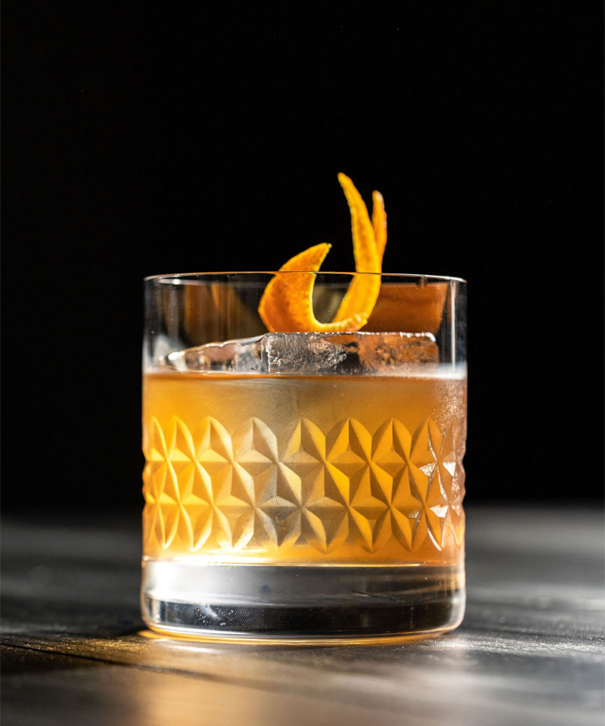

Back to Main
Old Fashioned Recipe

Description
Few drinks carry the air of sophistication that an Old Fashioned does. The classic cocktail has been around since the 19th century, making it one of the oldest drinks in existence. This riff gives the beloved cocktail a Celtic twist, subbing out the Old Fashioned’s usual bourbon or rye for Scotch whisky.
Ingredients
- 2 oz Blended Scotch
- 1 tsp Demerara or simple syrup
- 2 dashes Aromatic bitters
- 2 dashes Orange bitters
- 1 Orange zest
Steps
- Combine ingredients in a mixing glass and stir with ice.
- Strain into a rocks glass over a large cube.
- Garnish with a nicely manicured orange peel.
Back to Top